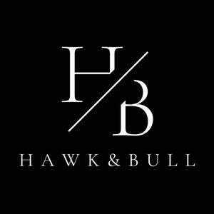

Trade Mark Journal No.2026/005 30 January 2026
UK00004320632 7 January 2026 (25)

- Class 25
- Leather shoes; Trousers of leather; Leather jackets; Leather pants; Leather waistcoats; Leather garments; Leather slippers; Leather clothing; Clothing of leather; Leather (Clothing of -); Leather coats; Leather dresses; Leather suits; Suits of leather; Leather headwear; Leather belts [clothing]; Clothing of imitations of leather; Leather (Clothing of imitations of -); Belts made of leather; Imitation leather dresses; Belts made from imitation leather; Clothing made of leather; Slippers made of leather; Suede jackets; Clothing made of imitation leather; Jackets; Jackets [clothing]; Men's and women's jackets, coats, trousers, vests; Fur jackets; Fur coats and jackets; Dinner jackets; Stuff jackets [clothing]; Long jackets; Gloves [clothing]; Duffel coats; Overcoats; Trench coats; Suit coats; Duffle coats; Greatcoats; Sheepskin coats; Coats of denim; Denim coats; Fur coats; Woolen clothing; Sheepskin jackets; Quilted jackets [clothing]; Gloves as clothing; Gabardines [clothing]; Cotton coats; Coats; Overshirts; Cashmere clothing; Rain coats; Denim jackets; Trenchcoats; Fur cloaks; Leggings [trousers]; Winter coats; Padded jackets; Waistcoats [vests]; Dust coats; Evening coats; Heavy coats; Topcoats; Waistcoats; Tail coats; Pea coats; Coats (Top -); Top coats; Down coats; Morning coats; Coats for men; Fleece jackets; Stoles (Fur -); Fur stoles; Clothing made of fur; Jacket liners; Synthetic fur stoles; Suits; Zoot suits; Dress suits; One-piece suits; Shirts for suits; Leisure suits; Men's suits; Evening suits; Dinner suits; Pram suits; Suits made of leather; Three piece suits [clothing]; Dress pants; Dress shirts; Ties [clothing]; Dress shoes; Ties; Ascots (ties); Bow ties; Bolo ties; Silk ties; Bolo ties with precious metal tips; Neckties; Woven shirts; Neckwear; Neck scarves; Knit shirts; Pocket kerchiefs; Kerchiefs; Silk scarves; Pocket squares [clothing]; Kerchiefs [clothing]; Bandanas [neckerchiefs]; Embroidered clothing; Woollen socks; Silk clothing; Knitted clothing.
Hawk & Bull Limited